The main questline of Skyrim is a large series of different quests. The story is split into 3 distinct acts. For a full walkthrough with video, I have provided a youtube video that you may watch.
Video by Kasaru
The quests in act one act as an introduction to the world, the dragonborn, and the threat that Alduin presents to the world. The act starts with the quest "unbound", where you must escape from Helgen while Alduin attacks.
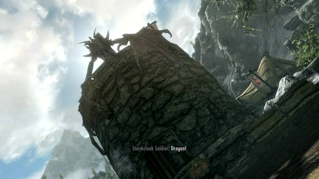After you escape, you are tasked with journeying to the city of Whiterun in "Before the Storm", to meet the Jarl. He tasks you with finding the Dragonstone in Bleak Falls Barrow.
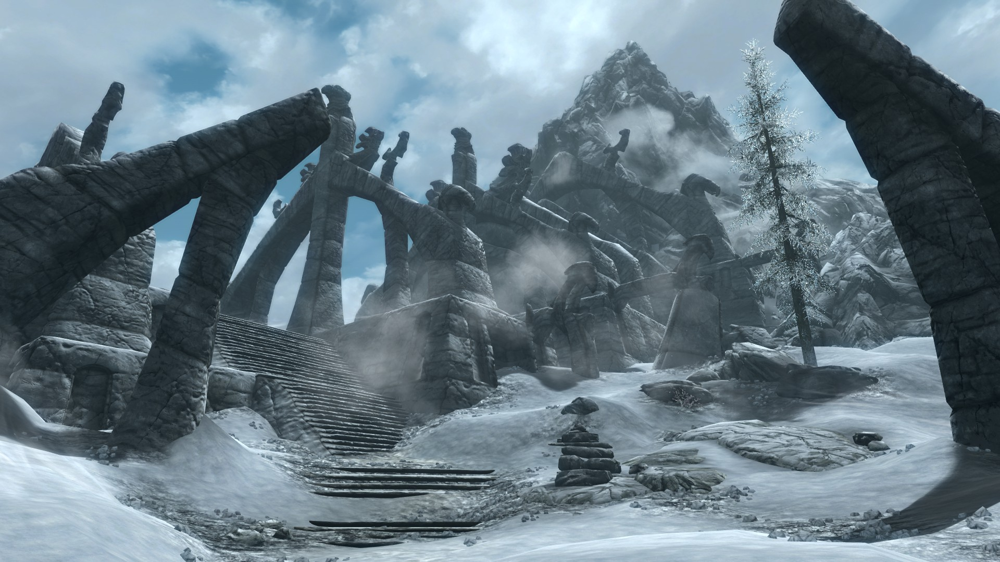When you return with the Dragonstone, you learn that a dragon is attacking the Western Watchtower. This is the first time you get to fight a dragon, and when you learn that you are Dragonborn.
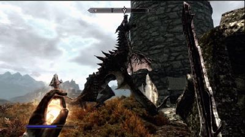After absorbing Mirmulnir's soul, you are called to High Hrothgar to meet the Greybeards. They task you with collecting the Horn of Jurgen Windcaller. However, it isn't there when you arrive - which leads to the end of act one.
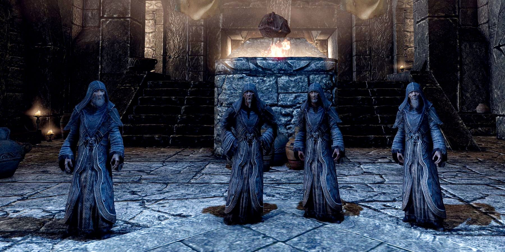After finding a note in place of the horn, you head back to Riverwood. Here, you meet Delphine - one of the last surviving members of the Blades. She tells you that she suspects the Thalmor are behind the return of dragons, and tasks you with infiltrating the embassy to see what they know about the dragons.
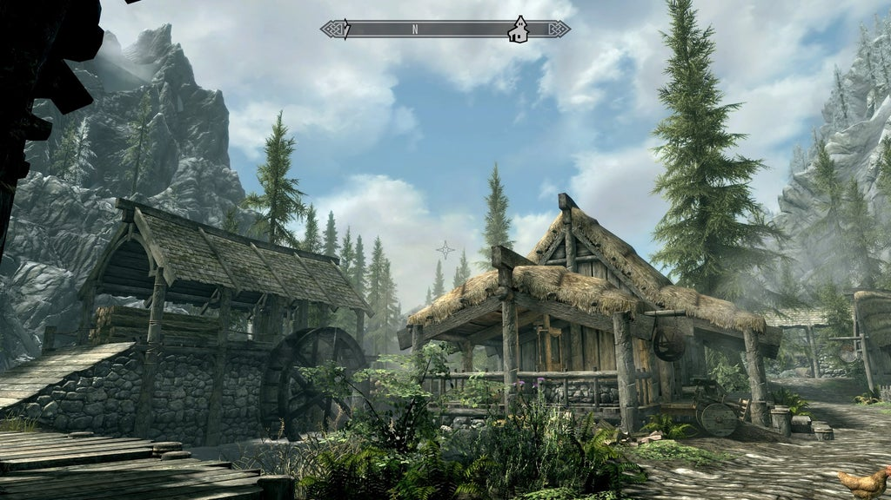While in the embassy, you discover that another member of the Blades - Esbern - is still alive. You head to the Ratway of Riften to get him before the Thalmor.
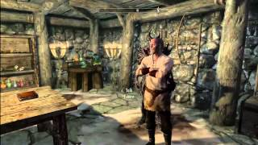Esbern discovers the location of Sky Haven Temple, which contains Alduin's Wall - a large mural depicting important events across Tamriel.
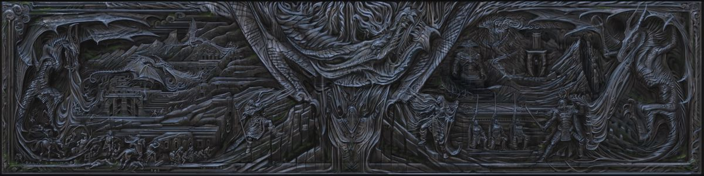Alduin's wall provides information on a Shout that can take down a dragon. After talking with the Greybeards, they inform you that the Shout does not follow the Way of the Voice so they do not know it. They show you the way to their leader, Parthurnax, who tells you what you need to know to learn the Shout and fight Alduin.
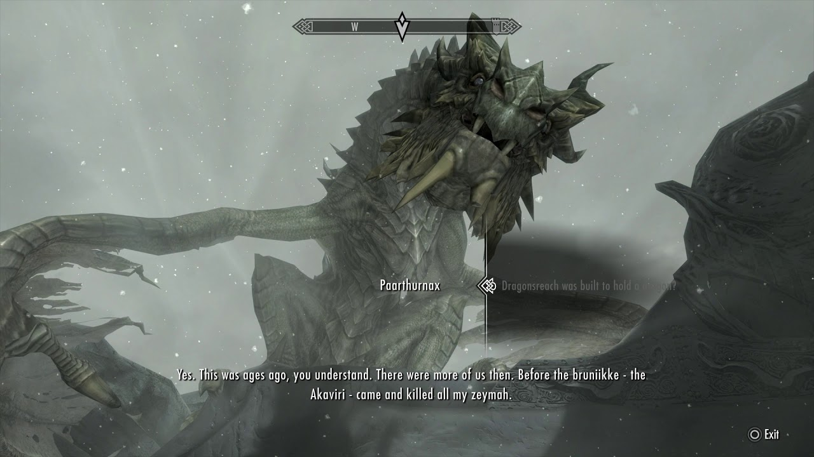To learn the Shout, you venture into Blackreach to find an Elder Scroll. The Scroll allows you to see the group that originally fought Alduin at the Throat of the World. After learning the shout, you battle with Alduin in the same place - however Alduin goes to Sovngarde before you can fully defeat him.
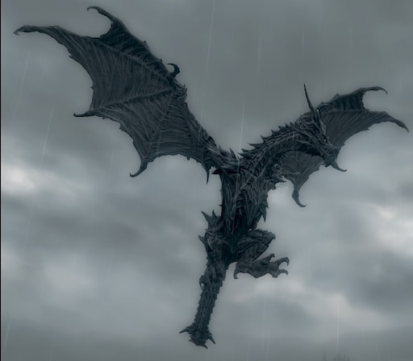If the Civil War questline is not completed, you have to arrange a peace treaty between the warring factions so that the dragon threat can be dealt with without having to worry about a civil war and so that Jarl Balgruuf can be comfortable with Dragonsreach being used to trap Odahviing.
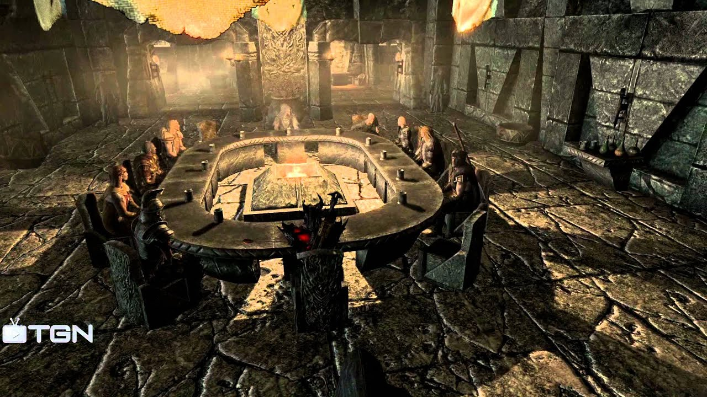After trapping Odahviing, you convince him to take you to an ancient dragon temple called Skuldafn, where you must fight through many Draugr and Dragons before fighting a Dragon Priest to gain entrance to a portal to Sovngarde.
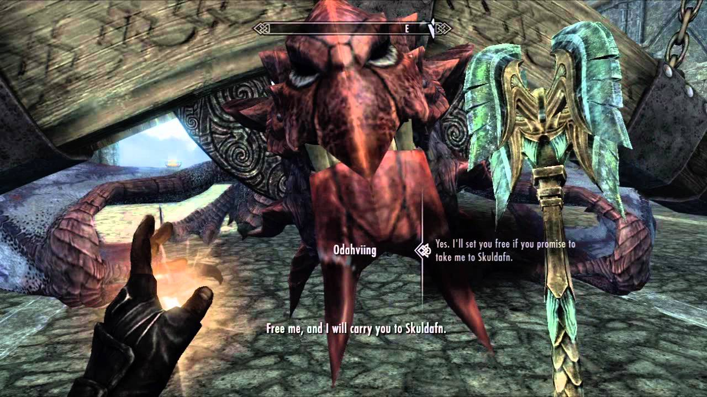After travelling through Sovngarde, you enter the Hall of Valor to gain the help of the original three heroes who fought Alduin before you. When you leave the Hall, you clear the sky to weaken Alduin and fight him.
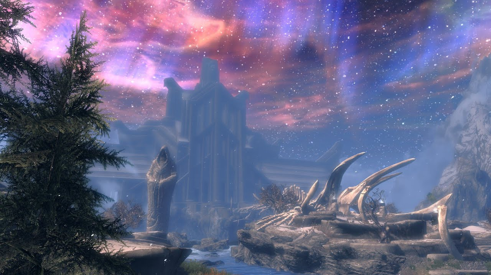Once Alduin is defeated, there is some extra dialogue in the epilogue. Once this is over, the questline is completed.
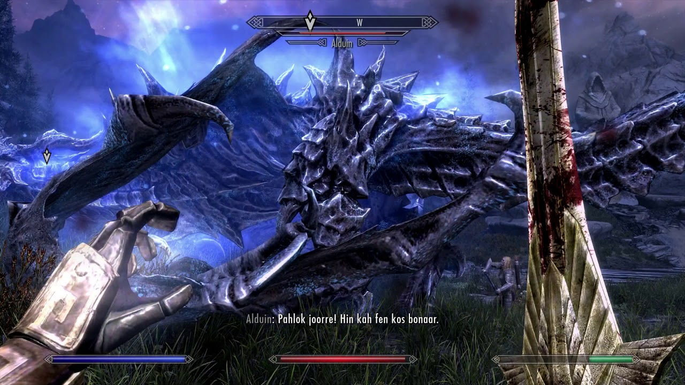